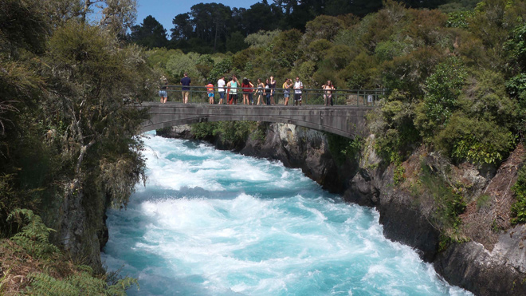
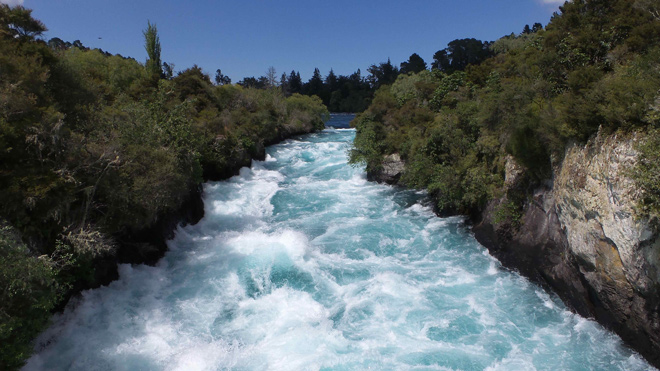
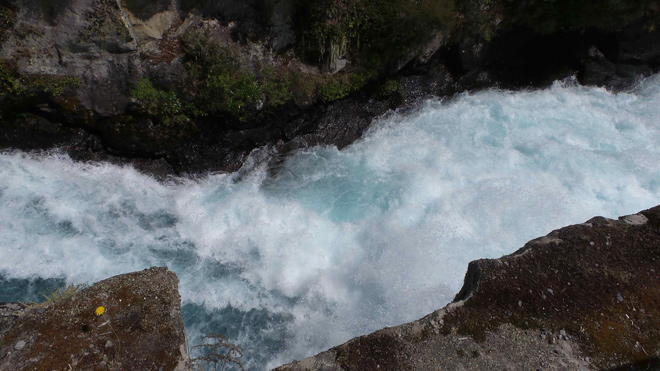
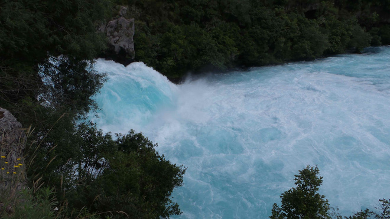
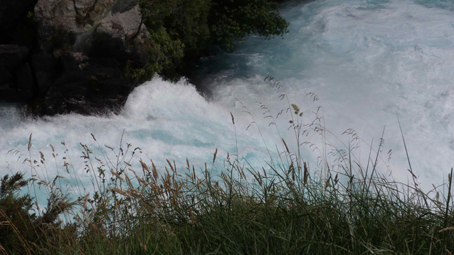
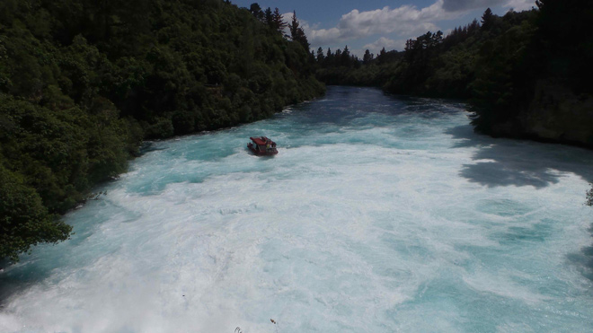
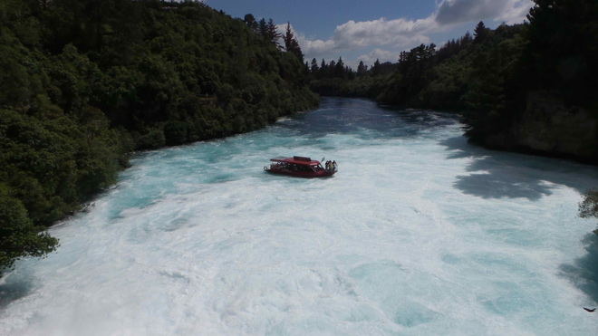
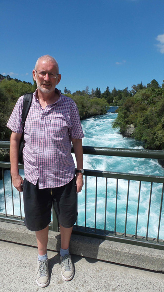
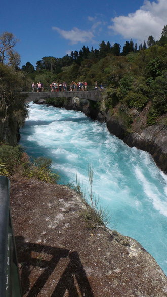

New Zealand's longest river, the Waikato, begins in Lake Taupo before crashing its way through the narrow chasm which is the Huka Falls - making a dramatic drop into a surging pool creating a torrent which the Maori call Hukanui (The Great Body of Spray) - before going at a more sedate pace to the west coast and emerging just south of Auckland.








